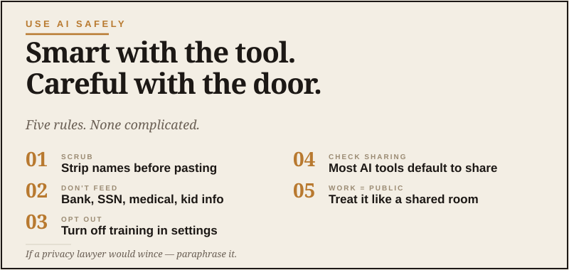

Use AI Safely
Smart with the tool. Careful with the door.

Let me give you the short version up front, because the rest of this article is just elaboration on it.
When you type something into an AI tool, that information leaves your computer and gets processed on a company’s servers — OpenAI, Anthropic, Google, whoever runs the tool. Depending on the tool, the company’s policies, and your settings, your input might be stored, might be used to improve future versions of the AI, and might in rare cases be reviewed by a human.
This isn’t sinister. It’s how the technology works. But it does mean you should think before you paste — the same way you think before you forward an email or post something on social media. In my house, “think before you hand over information” is just basic grown-up hygiene, like locking the door when you leave.
What you should never paste
Some things are just no. Don’t paste them. Ever. Not into ChatGPT, not into Claude, not into Gemini, not into the new tool everybody’s suddenly talking about this week. I don’t care how friendly the interface looks. A smiling text box is still a text box.
- Passwords or recovery codes. Use a password manager for these. AI tools should not see them.
- Full Social Security numbers. Same reasoning.
- Bank account numbers, routing numbers, or full credit card numbers. If you need to discuss banking, describe the situation without the actual numbers.
- Other people’s private information. Their medical history, their finances, their personal details. You don’t have permission to share those, and the AI is no exception.
- Anything covered by NDAs or workplace confidentiality. If your employer has rules about sharing internal documents, those rules absolutely cover AI tools, even if it’s not spelled out in the policy.
- Private medical records. If you want to discuss a health question, describe symptoms generally rather than uploading your full chart.
What you can paste, with judgment
Most things you actually want help with are perfectly fine. Plans. Drafts. Public information. Hypothetical scenarios. Project ideas. Questions about how something works. Edits to your own writing.
The rule of thumb: if you’d be comfortable showing it to a smart consultant you don’t know personally, you can probably paste it into AI.
The “sanitize first” move
This is the trick that solves most edge cases. If you want help with something that involves real numbers or real names, sanitize it before you paste.
Want help understanding your investment statement? Don’t paste the actual statement. Type:
You get the same useful guidance without handing over your actual numbers.
Same with medical questions. Same with legal scenarios. Same with anything sensitive.
The verification rule
This one is about output, not input.
AI tools sound confident even when they’re wrong. They’ll give you a plausible-sounding answer about your tax situation, your medication interactions, your legal options, your investment strategy — and the answer might be flatly incorrect.
For anything that matters — health, money, legal, safety, business decisions — use AI to prepare better questions, not as the final authority. Get oriented. Build a list. Then talk to an actual professional.
This isn’t a knock on AI. It’s the same rule you’d apply to a smart friend who knows a little about everything: useful for getting your bearings, not a replacement for an expert when stakes are real. Use it to walk into the room better prepared, not to avoid walking into the room.
The “memory” conversation
Some AI tools now remember things across conversations. ChatGPT has a memory feature. Claude has “projects” that persist context. These are useful — they let you build up a working relationship with the tool — but they also mean what you share might stick around.
Two practical moves:
First, in your AI tool’s settings, look for the option to turn off training on your data. Most tools have this. It means your conversations won’t be used to improve future versions of the AI. It’s a one-click change and it’s worth doing.
Second, periodically review what the tool has “remembered” about you and clean up anything you don’t want hanging around. ChatGPT lets you see and delete memory entries. Use that.
The work-account question
If you’re using AI for work — even informally, like asking it to help with a presentation — assume your employer has a position on this, even if it hasn’t been spelled out yet.
The safe move is to use a separate account for work, follow whatever AI policy your company has, and never paste internal documents, customer information, or anything covered by confidentiality agreements into a personal AI tool.
If your company hasn’t yet set rules about this, ask. They will eventually. Better to ask now than find out you accidentally violated a policy that didn’t exist when you started using the tool.
The bottom line
AI is one of the most useful tools to come along in years. Use it. The privacy rules aren’t about being scared of it — they’re about using it the way a grown adult uses any powerful tool.
If the data is private, don’t paste it. If the answer matters, verify it. If you wouldn’t say it out loud at a coffee shop, don’t type it into a chatbot.
That’s the whole framework. The rest is just situational judgment.